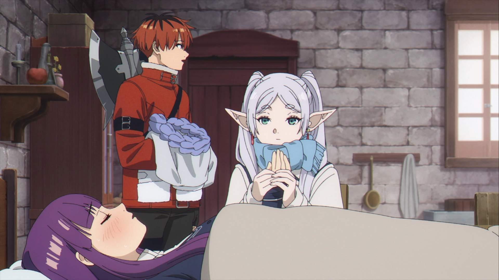
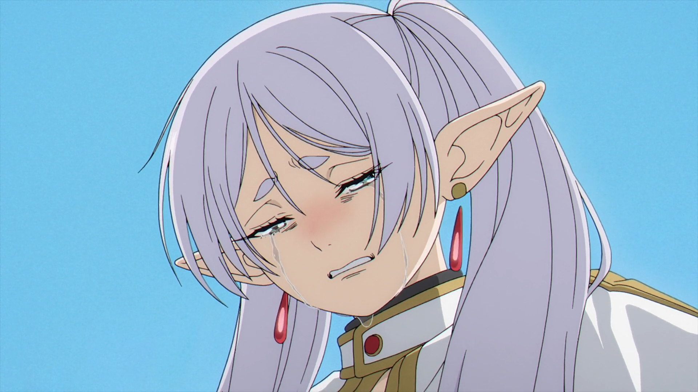

Time and Morality
In Frieren, time is a central theme, explored through the immortality of the elf protagonist, Frieren, who has lived far longer than humans. This long lifespan creates a unique perspective on the passage of time, as Frieren watches her companions age and die, while she remains unchanged. The theme delves into the moral implications of immortality, questioning how one should live when time stretches endlessly. As Frieren reflects on her past and her relationships, she grapples with the meaning of time, both in terms of her personal growth and her actions, leading her to reconsider what truly matters in the fleeting lives of others.

Friendship and Connection
Frieren highlights the beauty and complexity of human relationships, especially through the lens of Frieren’s past adventures with her former companions. Their bond, forged during their shared journey to defeat a great evil, lingers even after they have parted ways. The anime focuses on how friendships shape who we are, emphasizing the lasting impact of those connections, even when time and distance separate us. As Frieren travels with new companions, she slowly learns to appreciate the transient yet meaningful connections that are formed through shared experiences, building deep emotional connections despite her initial distance.
Self-Discovery
Throughout the series, Frieren embarks on a journey of self-discovery as she comes to terms with her emotions and her place in the world. Her long life has left her disconnected from others, and her initial coldness and detachment are challenged as she faces the realities of loss, love, and personal growth. As Frieren interacts with her new companions, especially the younger generation, she begins to learn more about herself, unearthing emotions she had long buried. Her journey is not just one of external exploration, but of internal growth, as she discovers how to cherish the fleeting moments that make life meaningful.
